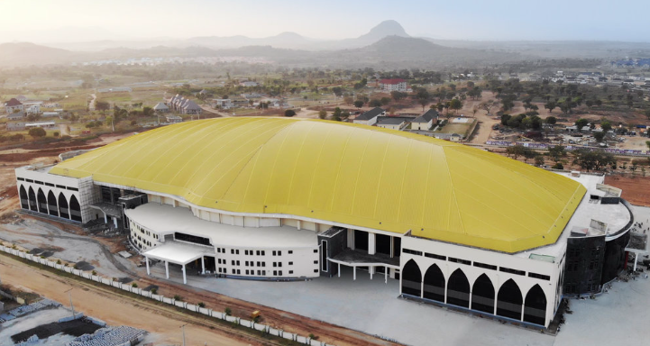
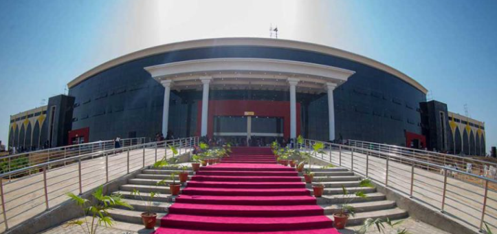
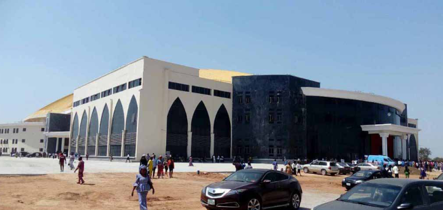
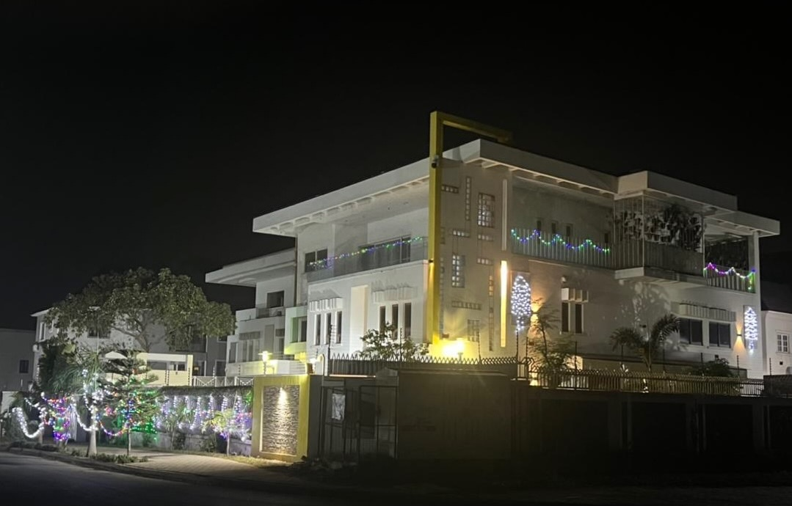
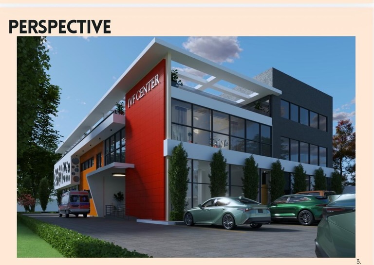

Brief Intelligence
Translate ambition, ministry or business needs, site limits, and budget pressure into a usable architectural brief.
Architecture consulting for buildings that must carry meaning
Crystal Stairs Ltd shapes timeless, functional spaces through disciplined design, meticulous construction thinking, and a clear path from concept to built reality.
Insights & advisory
Inspired by leading global practices that pair built work with research, this advisory layer helps clients test the brief, understand long-term value, and make smarter decisions about land, form, movement, maintenance, and experience.
Translate ambition, ministry or business needs, site limits, and budget pressure into a usable architectural brief.
Shape spaces that keep value over time through durable identity, flexible use, and construction realism.
Study arrival, circulation, visibility, comfort, ceremony, and memory so the building works for people first.
Samuel Alonge's public brand is built around award-level design, meticulous craftsmanship, and buildings that balance presence with practical function. The consulting offer is simple: help clients make better decisions before drawings, budgets, contractors, and site pressure lock the project in place.
"Award-level Architectural Designs. Meticulous Craftsmanship in Construction. Timeless Spaces, Functional Beauty."



Flagship proof point
Crystal Stairs Ltd's public Instagram repeatedly connects Architect Samuel Alonge with the prestigious world-class Glory Dome, described there as a 100,000+ seat, pillar-free sanctuary in Abuja.
Design authorship and architectural recognition are the central story in the public posts.
Large assembly spaces demand clarity on movement, structure, visibility, dignity, and maintenance.
Early architectural decisions protect the project from expensive redesign during execution.
Project sectors
Sanctuaries, auditoriums, ministry campuses, and high-capacity gathering spaces.
Private homes, luxury residences, renovations, and design direction for family estates.
Mixed-use, office, retail, hospitality, and client-facing spaces with a memorable presence.
Second opinions, concept reviews, site decisions, and construction-phase design protection.
Concept design, spatial planning, facade direction, presentation visuals, and design development for distinctive buildings.
Buildability review, material direction, site coordination, and craftsmanship oversight so details survive the construction phase.
Consulting for worship centers, civic projects, estates, and private developments that need a strong architectural identity.
Selected visual language


"Timeless spaces, functional beauty."
Brand language from Crystal Stairs Ltd's public Instagram profile.
Why clients engage early
Turn a loose idea into a brief, scope, and design direction that consultants can work from.
Resolve design conflicts before they become site variations, rework, or compromised finishes.
Create buildings with a clear identity, whether intimate, ceremonial, commercial, or civic.
Private consultation
Use the form to structure your inquiry. It will prepare a clean brief you can copy and send through Instagram until direct email or phone details are added.
Continue on Instagram